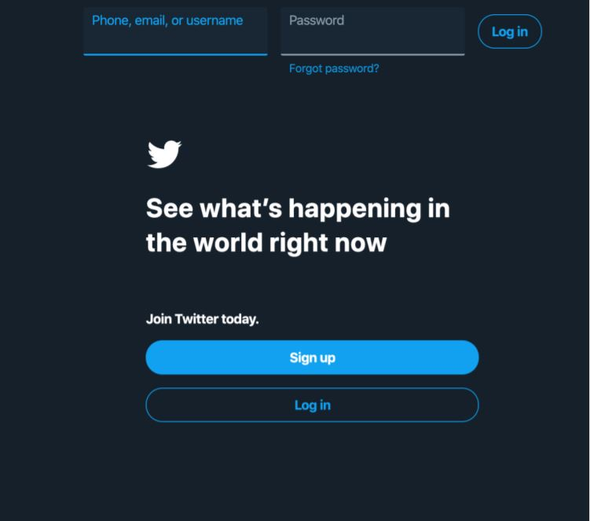
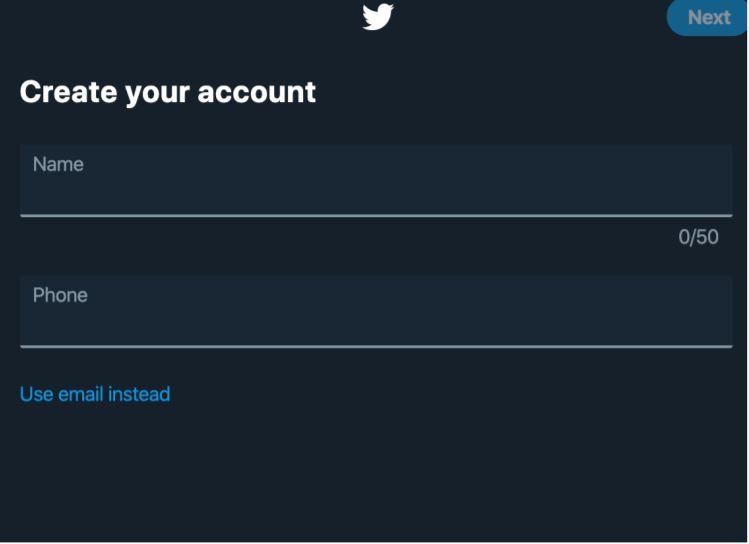
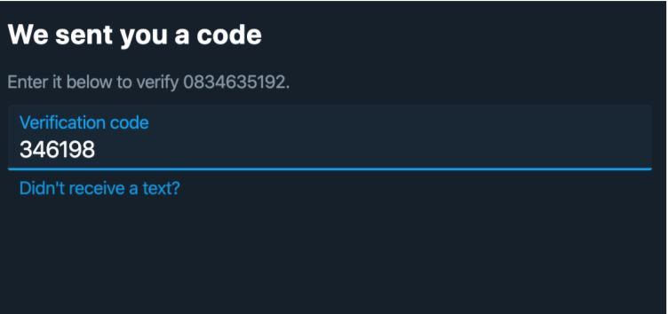
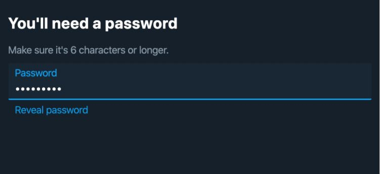
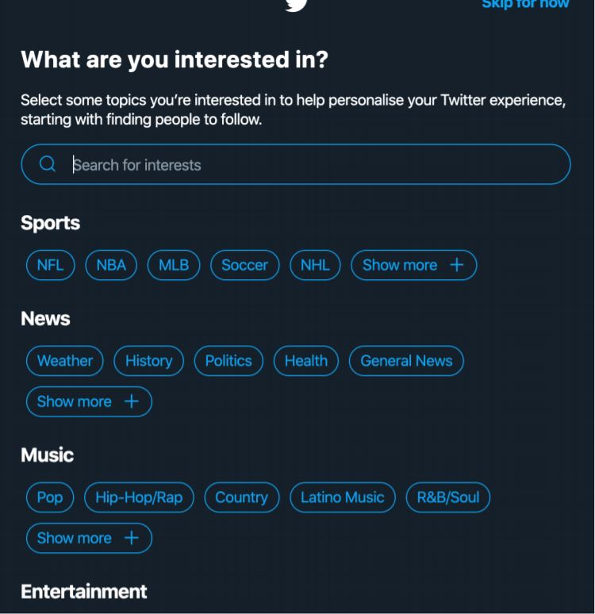

Social Media
Justin Flood
Twitter is an application that you can download on any android or apple phone through the app/play store for free. Twitter is a social media platform that allows you to post messages known as “tweets”, it allows you to like posts by other users and retweet their posts on your own page. Twitter was founded in 2006 in San Francisco. On twitter you can use the hashtag key before a relevant word, this allows your tweets to be found easier by other users. By clicking on a hashtag in a tweet it brings you to any other tweets that also include that word or phrase. Twitters logo since 2010 is of a white bird on a light blue background. The bird is said to be the “twitter bird” and that’s why the posts are called “tweets”, as that is the sound the bird would make so it makes sense.
Registering an account for twitter is very simple and easy that basically anybody at any age that’s old enough for the application can make an account All you need is either an email address or a phone number to get started.
Once you type up twitter on google it will load you up to a page where you can either make an account or sign into an existing account, if the person already had an account they would head straight into twitter and wouldn’t see this page.
When you press sign up you will be introduced to another page and you have created a username for your account and you also have to either put your email address down or your phone number. The reason you have to do either one of them is because it will help twitter contact you just in case something happened to your account.
Once you made your account you will be brought into another screen and depending on which option you picked they will send a code to your email or number and ask you to type it in just to make sure you’re not a bot or fake account.
After that they will ask you to make a password it can be anything it just has to be at least 6 letters long.
After all that is done twitter will ask you to select thing that you are interested in, this will help them find and help you choose on what and who to follow on twitter since it’s your first time on the app.
    You can control some of this through your own device by turning your locations off. You can also delete your previous locations, address book and any other optional data you upload. You are required to give an email to log in, but a phone number is not required unless you wish to use it or you use two-step authentication for logging in. Twitter also use cookies for their ads but you can fine tune your ads or change it completely.
You can report a user or a tweet. This report falls under specific categories and then Twitter have a team set up so that they will determine if it’s true and to which punishment the user will get, varying from the user having to delete the tweet, not being able to tweet just read their timeline, or having to delete their account.